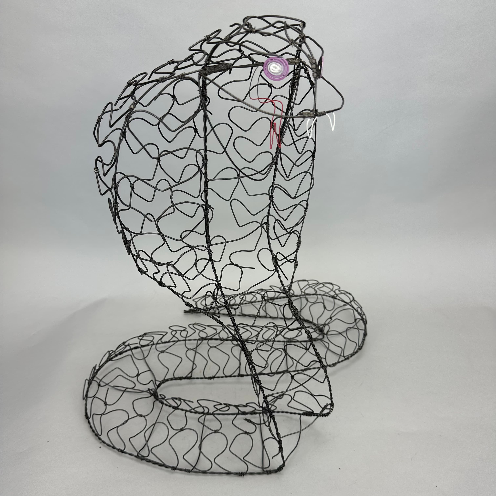

Snake
ART 1012 Three Dimensional Design
Wire, Spraypaint
The goal of this project was to sculpt an item by hand by curving, bending, and tying wire pieces together. We were to create a structure and include details/texture with wire, and the completed sculptures were spraypainted as a finishing touch.